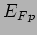
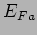
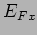
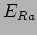
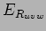

Next: Weather prediction model -()
Up: SCA Components
Previous: SCA Components
Contents
Models the environment the scope exists in. Uncertain, should provide current and possibly predictive estimates of the variables. Predictive useful to fold in to likeliness indicator of 'availability and utility' of future observing periods. Scheduler would like to be able to look ahead and decide if its best to do X now or wait for half an hour when seeing is likely to be better
Some Variables:-
seeing - photometricity/extinction [King, 1985,Benn and Ellison, 1998] - sky brightness [Krisciunas and Schaefer, 1991,Krisciunas, 1997] - cloud/dust - temperature - bad weather, rain,wind,humidity = scope out-of-action.
How do we get this stuff into the EM and how do we do prediction - is it worth it? what lookahead horizon? - there are a number of papers on this [Aussem et al., 1994a,Aussem et al., 1994b,Sarazin, 1997,Aussem and Tran, 2002,Racine, 1996] also some useful stuff on VLT weather station), used neural nets with various time averaged meteo indicators - results uninspiring not much better than climatological stats.
ING weather stuff and LT data. Dont need technical details of how this is processed by RCS or how it is measured.
A number of standard models have been set up for use in the simulations.
-
- Seeing is kept constant in the poor state.
- 
- Seeing is kept constant in the average state.
- 
- Seeing is kept constant in the excellent state.
- 
- Random using annual (climatological) distribution.
- 
- Random using seasonal distribution.
-
- Actual seeing history recorded from a given night.
-
- Random using supplied values for probability distribution between Poor (u), Average (v) and Excellent (w) seeing.
-

- Scenario-based with specified scenario ID.
Additional (simulation) models proposed which use actual environmental scenario from simulation with varying degrees of accuracy over specified look-ahead periods.
Next: Weather prediction model -()
Up: SCA Components
Previous: SCA Components
Contents
Steve Fraser
2008-01-31